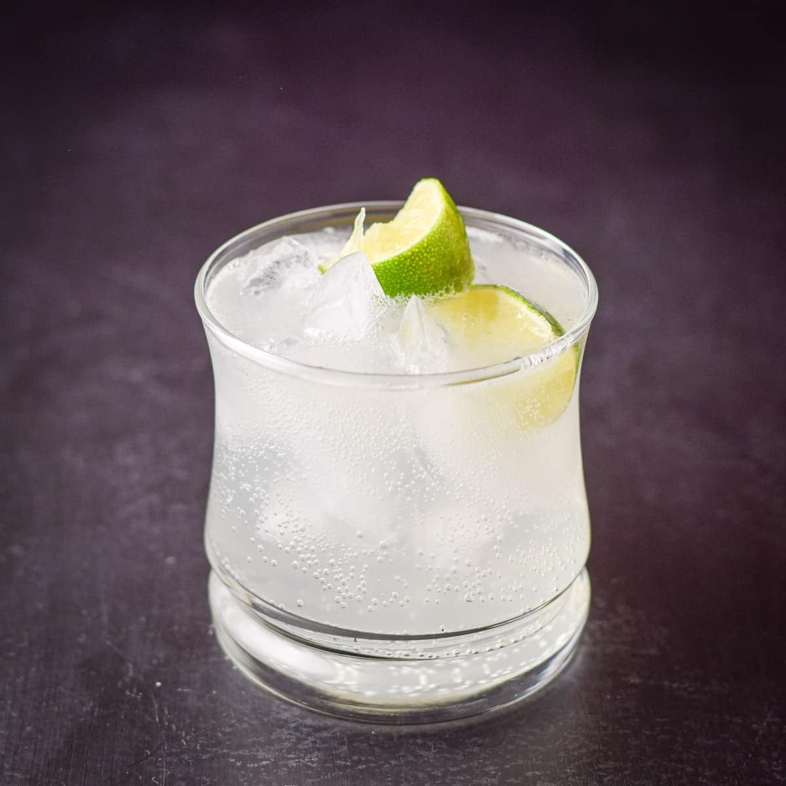

The Gin and Tonic

Overview
Gin & Tonic. If you can say it, you can make it. Right? Right.
Configured with two parts tonic to one part gin is a highball of balance and beauty.
Shopping List
- 2 ounces gin
- 4 ounces tonic water
- Garnish: 1 lime wheels
Recipe
- Fill a highball glass with fresh ice
- Add gin to the glass and top with tonic water
- Gently stir the cocktail with a bar spoon until chilled
- Garnish: Slice lime wheel and add to glass rim